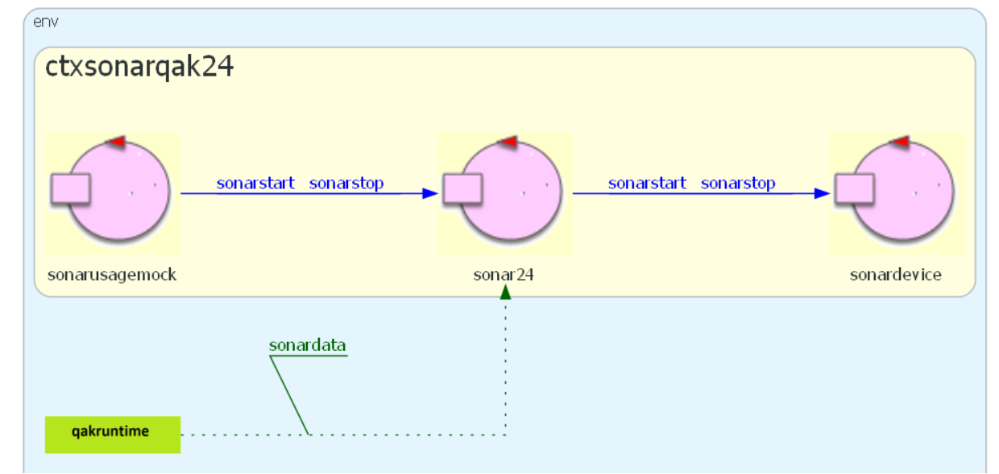
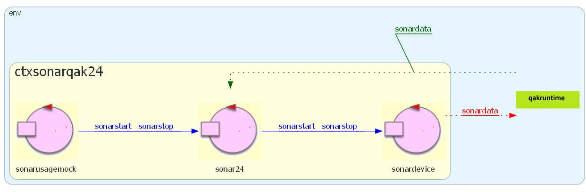
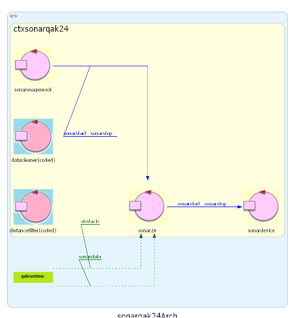
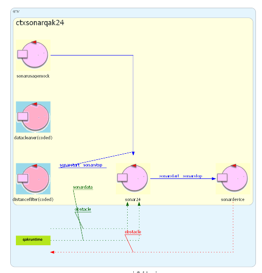

Goal: sviluppare un componente software che utilizza il SONAR HC-SR04 e che sia in grado di:
ricevere via rete ed eseguire comandi di sonarstart/sonarstop
inviare ad altri componenti software i vaori di distanza rilevati, filtrati in modo che ogni valore
D emesso sia un valore intero
tale che 0<D<=150
Disponiamo di codice di basso livello sonar.py che attiva il sonar fisico e scrive sul dispositivo standard di output, a intervalli temporali fissi, i valori della distanza corrente rilevata.
Il codice sonar.py non è in grado di
inviare informazioi in rete nè di ricevere comandi di sonarstart/sonarstop.
Ha inoltre una forma di filtraggio dei valori molto limitata.
Non si ritiene opportuno modificare il codice di basso livello per rispondere alle esigenze
applicative.
Si ritiene invece più opportuno procedere in modo top down, partendo dalla definizione di un
componente di alto livello, denominato sonar24 e modellato come un
Actor capace di gestire
i seguenti dispatch:
Dispatch sonarstart : sonarstart(X)
Dispatch sonarstop : sonarstop(X)
Ricordando i concetti de La Clean Architecture, occorre ora rispondere alla seguente domanda:
come sonar24 ?
Per motivi di modularità ed estendiblità, si propende per l’uso di un event:
Event sonardata : distance(D)
Eventi di questo tipo si suppongono generati da un altro componente, denominato sonardevice,
anch’esso modellato come un Actor
Per motivi di efficienza e per evitare l’inutile trasmissione di eventi via rete, si ritiene opportuno utilizzare il concetto di Attori streamer, e le primitive subscribeTo e emitLocalstream
Il componente sonardevice
può incapsulare il codice di basso livello sonar.py
e implementare i comandi sonarstart/sonarstop, che
gli possono essere delegati
da sonar24
Ne consegue la seguente Architettura Logica:
|  |
La emissione di eventi con emitLocalstream non viene visualizzata. Se fosse emesso con emit si avrebbe:  |
Il componente sonardevice può
essere realizzato in due modi:
in modo esplicito, definendo un Actor nel modello applicativo
in modo ‘sommerso’, definendo un CodedQActor come sonarHCSR04Support23.kt
Inoltre un filtraggio più accurato dei valori di distanza può essere ottenuto costruendo una pipe di attori che ha sonardevice come sorgente-dati e un componente dataCleaner che provvede a eliminare dati spuri.
L’architettura logica di progetto diventa:
|  |
La emissione di eventi con emitLocalstream non viene visualizzata |
Inoltre, la pipe può essere estesa introducendo un componente terminale distancefilter capace di generare eventi significativi per il livello applicativo, quali ad esenpio:
Event obstacle : obstacle(D)
|  |
L’evento |
TODO: affrontare la progettazione del SistemaRilevamento.
L'implementazione segue la progettazione definita nel documento.
Si è scelto di proseguire andando a creare il sonardevice come
Actor esplicito andando a
sfruttare l'infrastruttura qak già fornita
Per semplicità, si è costruito un file python sonar_mock.py
che simuli il comportamento del sonar.py già definito.
All'interno di sonar24.qak sono definiti tutti gli attori
definiti nel documento di progetto
sonar24distancefilter
sonardevicedatacleanerdistancefilter0<D<150
{kind=link}
{kind=link}
{kind=link}
{kind=link}